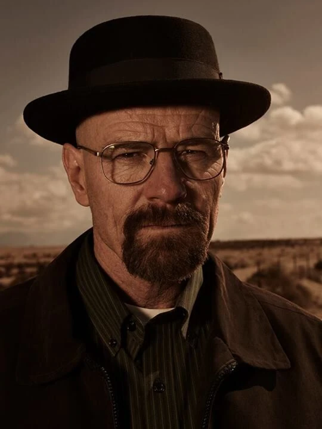

"Вчитель" хімії: Уолтер Уайт

Уолтер Хартвелл Уайт
Народився 7 вересня 1958 року.
Уолтер Уайт - талановитий хімік, який закінчив Каліфорнійський технологічний інститут,
зробив внесок у дослідження Протонної Радіографії, що згодом допомогло команді
вчених здобути Нобелівську премію в галузі хімії. Після закінчення аспірантури
Уолтер заснував компанію «Технології Сірої Речовини» (англ. Gray Matter Technologies)
разом з Еліотом Шварцем, своїм колишнім одногрупником та близьким другом. В цей час
Уолтер зустрічався зі своєю помічницею Гретхен. Тим не менш, він раптово кинув Гретхен
і залишив компанію, продавши свою частку в ній за 5000$. Пізніше Еліот та Гретхен
одружилися і розбагатіли, через що Волтер таємно їх ненавидить.
Уолтер "Хайзенберг" Уайт
Во время празднования пятидесятого дня рождения Уолтера по
телевизору показывают репортаж об аресте торговцев метамфетамином, при
котором у дилеров была изъята впечатляющая сумма денег. Через пару дней
Уолт узнаёт, что болен раком лёгких, и оказывается, что жить ему осталось
в лучшем случае два года. Зная, что его семья находится в тяжёлом финансовом
положении, и вспомнив телерепортаж, Уолтер решает синтезировать метамфетамин,
чтобы гарантировать финансовое благосостояние семье после своей смерти.
Составляя компанию своему свояку, Хэнку, Уолтер отправляется понаблюдать за
задержанием местного дилера по прозвищу «Капитан Кук». Во время задержания Уолтер
замечает своего бывшего ученика Джесси Пинкмана (Аарон Пол), сбегающего из притона,
и понимает, что Джесси — дилер. Благодаря школьным записям Уолтер находит Джесси и
предлагает ему партнёрство, по условиям которого Уолтер будет производить
метамфетамин, а Джесси — продавать. Первым на примете оптовым покупателем их
товара становится друг Джесси по кличке «Крейзи 8», который является информатором
Хенка Шрейдера. Он собирается его убить, однако Уолтер хитростью расправляется
с ним и с его братом первый. Вторым покупателем становится член мексиканского
наркокартеля Туко Саламанка. Первым к нему приходит Джесси. Затребовав деньги
вперёд за свой товар, он оказывается избит и попадает в больницу. Затем, прихватив
гремучую ртуть, замаскированную под метамфетамин, к Туко приходит сам Уолтер,
дабы получить свои деньги и отомстить за товарища. Он представляется как
Гейзенберг и требует с Туко деньги за товар, отобранный у Джесси. Туко
отказывается отдать деньги. Тогда Уолтер взрывает гремучую ртуть и угрожает
убить Туко следующим взрывом. Будучи впечатлённым как качеством товара,
так и самим Гейзенбергом, Туко соглашается работать с ним.